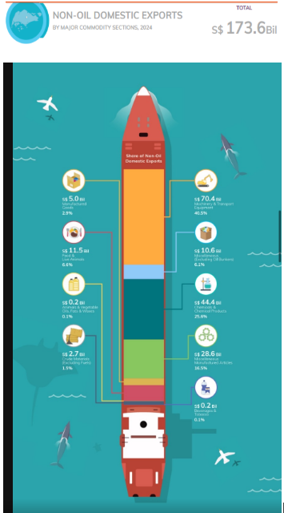
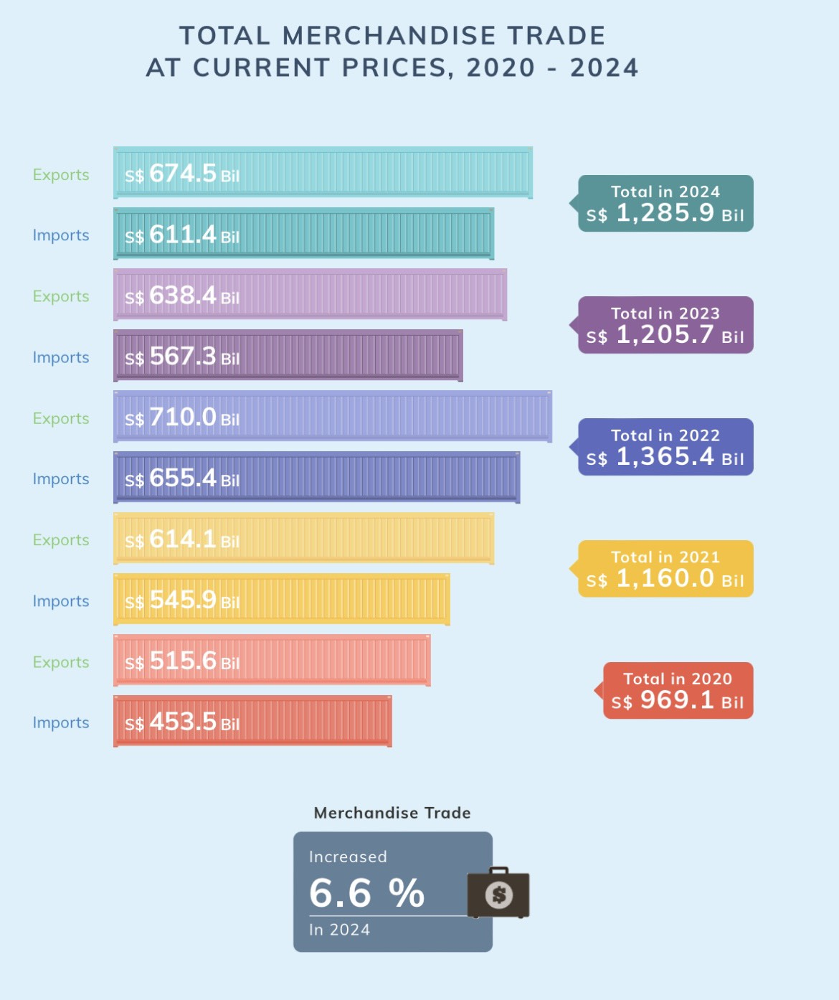
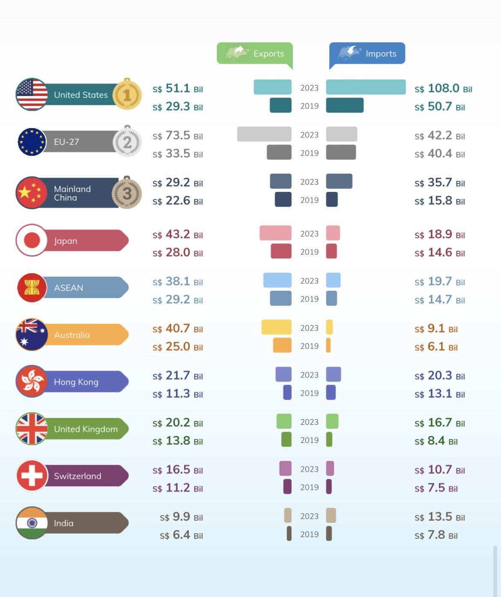
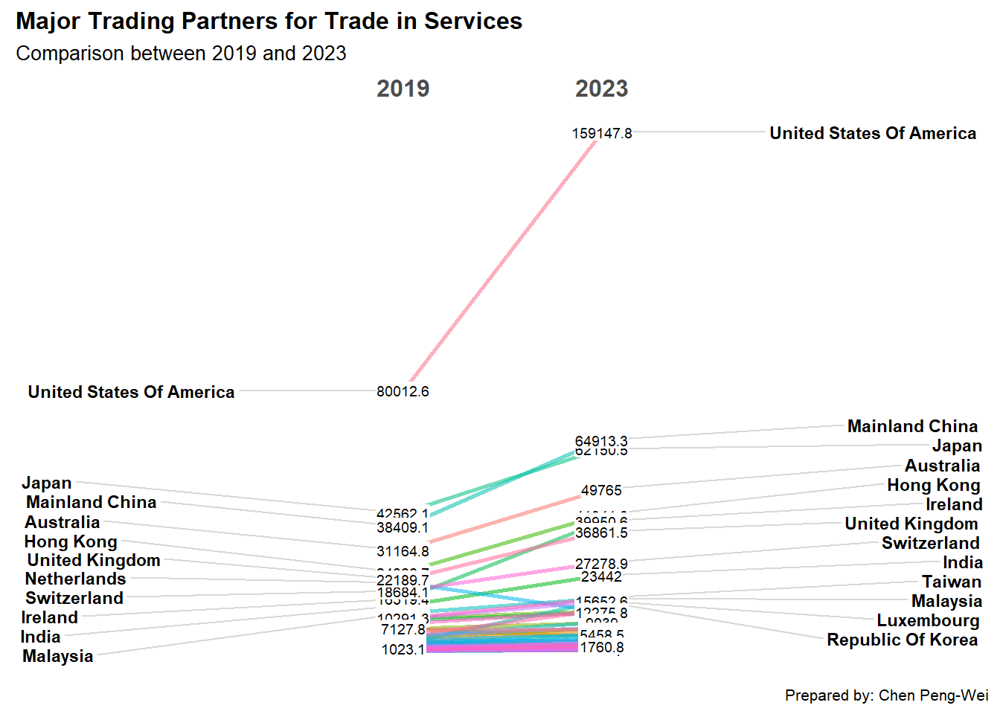
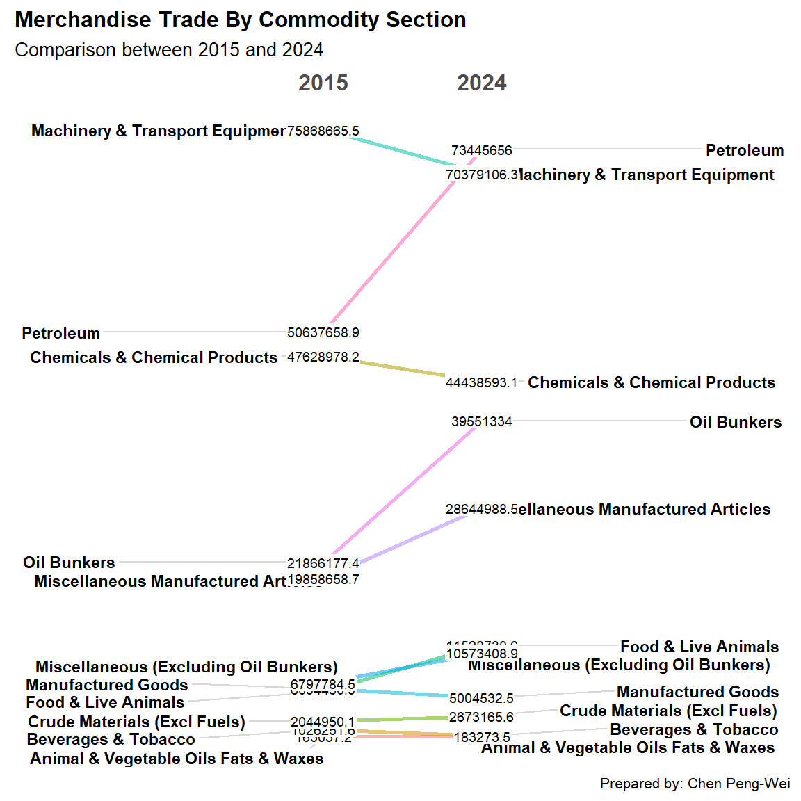
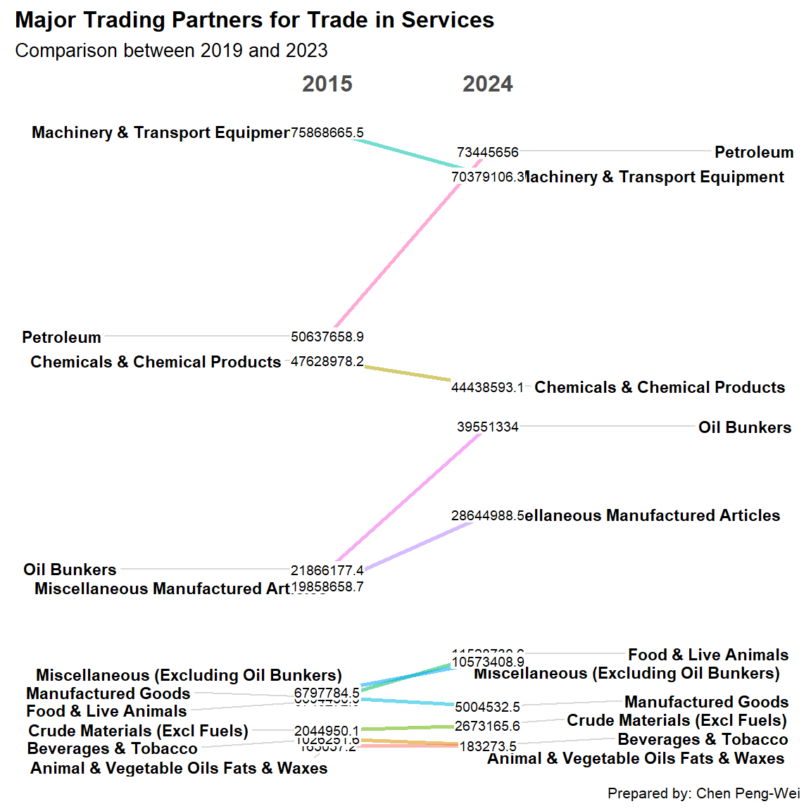
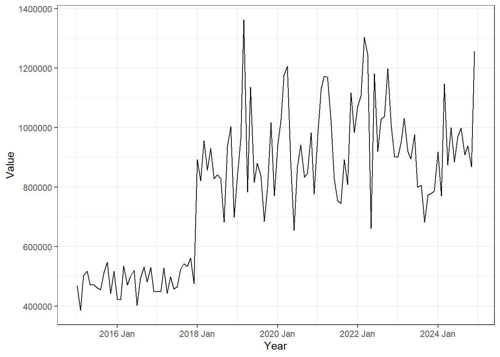
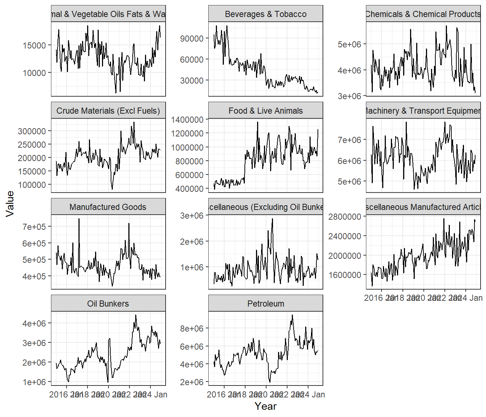
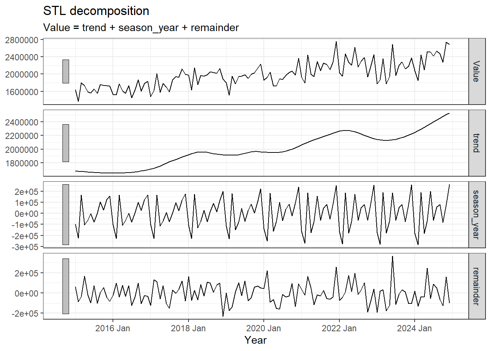
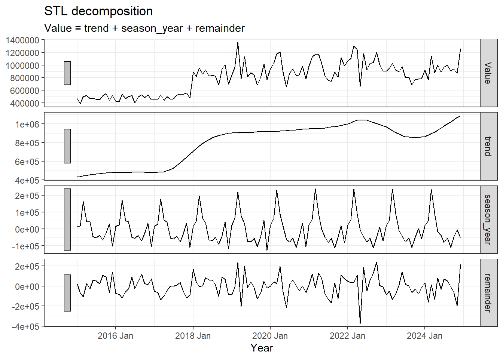

pacman::p_load(ggplot2,dplyr,scales,CGPfunctions,patchwork,tidyverse,ggthemes,ggiraph,plotly,tsibble, feasts, fable, seasonal,readxl)Take-home Exercise 2: Be Tradewise or Otherwise
DataVis Makeover and time series analysis: Singapore’s International Trade
1. Introduction
Since Mr. Donald Trump took office as the President of the United States on January 20, 2025, global trade has become one of the most closely watched topics. By leveraging data visualization and time-series analysis, this exercise aims to uncover key trade shifts, emerging trends, and possible external influences that have shaped Singapore’s trade performance over the past decade.
1.1 Objective and Tasks
Aside from the time series analysis, the objective of this take-home exercise is to improve an original visualization by evaluating its strengths and weaknesses and exploring ways to enhance its clarity, effectiveness, and overall impact.
The specific tasks are:
- select three data visualisation on this page, comments on the pros and cons and provide sketches of the make-over,
- using appropriate ggplot2 and others packages create the make-over of the three data visualisation critic above, and
- analyse the data with either time-series analysis or time-series forecasting methods by compliment the analysis with appropriate data visualisation methods and R packages.
2. Getting Started
Sys.setlocale("LC_TIME", "C") [1] "C"The data used in data visualisation makeover is Merchandise Trade by Region/Market from Department of Statistics Singapore, DOS.
outputFile (2) is the Merchandise Trade data and outputFile (3) is the Trade in Services (TIS) data.
file_path <- "data/outputFile (2).xlsx"
file_path2 <- "data/outputFile (3).xlsx"3. Data Visualisation Makeover
3.1 Non-oil Domestic Export and Re-Exports 2024
3.1.1 Original Visualisation

Observation
Procs:
- Dynamic presentation: The graph uses an engaging and visually appealing layout.
- Clear category labels: The text for each category is easy to read, and the accompanying icons help with quick comprehension.
Concs:
Overly colorful: The vibrant design can be distracting, making it hard to focus on the stacked bar chart in the center of the ship.
Prioritization of text elements: In the stack barchart , the percentage share are more important than the exact monetary values. However, the design emphasizes the dollar amounts instead.
Stacked bar ordering: If the segments were arranged in descending order based on percentage share, it would be easier to compare and interpret the data at a glance.
In the further step, I will:
Increase the font size of the percentage values to highlight the relative proportions of each category.
Arrange the order by the value.
Combine it with the Re-exported data. You can take a look of the difference in distribution.
Add the value number in the tooltip
Select the non-oil data we want. As for the time, only select the data in 2024.
Non_oil_exp <- read_excel(file_path, sheet = 2, skip = 10, col_names = TRUE)
Non_oil_exp<- Non_oil_exp[46:55, ]
Non_oil_exp <- Non_oil_exp[c(1, 3:14)]
rownames(Non_oil_exp) <- Non_oil_exp[[1]]
Non_oil_exp2024 <- Non_oil_exp %>%
mutate(`2024` = rowSums(select(., starts_with("2024")), na.rm = TRUE))
#re-export
Non_oil_rexp <- read_excel(file_path, sheet = 2, skip = 10, col_names = TRUE)
Non_oil_rexp<- Non_oil_rexp[59:68, ]
Non_oil_rexp <- Non_oil_rexp[, c(1, 3:14)]
rownames(Non_oil_rexp) <- Non_oil_rexp[[1]]
Non_oil_rexp2024 <- Non_oil_rexp %>%
mutate(`2024` = rowSums(select(., starts_with("2024")), na.rm = TRUE))Combine all the 2024 month value data into a total year value in 2024. Calculate the percentage of each type of the product.
total_non_oil <- Non_oil_exp2024 %>%
filter(`Data Series` == "Non-Oil") %>%
pull(`2024`)
Non_oil_exp2024_stack <- Non_oil_exp2024 %>%
filter(`Data Series` != "Non-Oil") %>%
mutate(Value_Billion = round(`2024` / 1e6)) %>% #convert to Billion
mutate(Percent = (`2024` / total_non_oil) * 100) %>%
mutate(`Data Series` = fct_reorder(`Data Series`, Percent, .desc = TRUE))total_non_oil_re <- Non_oil_rexp2024 %>%
filter(`Data Series` == "Non-Oil") %>%
pull(`2024`) # get the 2024 totla value
Non_oil_rexp2024_stack <- Non_oil_rexp2024 %>%
filter(`Data Series` != "Non-Oil") %>%
mutate(Value_Billion = round(`2024` / 1e6)) %>% # 轉換為 Billion
mutate(Percent = (`2024` / total_non_oil_re) * 100) %>%
mutate(`Data Series` = fct_reorder(`Data Series`, Percent, .desc = TRUE))3.1.2 Make-over Visualisation
non_oil_colors <- c(
"Food & Live Animals"= "blue",
"Beverages & Tobacco" = "#1f77b4",
"Crude Materials (Excl Fuels)" = "#d62728",
"Animal & Vegetable Oils Fats & Waxes" = "#2ca02c",
"Chemicals & Chemical Products" = "#9467bd",
"Manufactured Goods" = "#17becf",
"Machinery & Transport Equipment" = "#ff7f0e",
"Miscellaneous Manufactured Articles" = "#7f7f7f",
"Miscellaneous (Excluding Oil Bunkers)" = "#8c564b"
)
total_domestic_exports <- format(sum(Non_oil_exp2024_stack$Value_Billion), big.mark = ",")
total_re_exports <- format(sum(Non_oil_rexp2024_stack$Value_Billion), big.mark = ",")
p1 <- ggplot(Non_oil_exp2024_stack, aes(
x = "DOMESTIC EXPORTS", y = Percent, fill = `Data Series`,
text = paste0("<b>", `Data Series`, "</b><br>Value: $", Value_Billion, " Billion")
)) +
geom_bar(stat = "identity", width = 0.6) +
geom_text(aes(label = ifelse(Percent > 2.8, paste0(round(Percent, 1), "%"), "")),
position = position_stack(vjust = 0.5), size = 3.5, color = "black") +
geom_text(aes(y = -9, label = paste0("($", total_domestic_exports, " Billion)")),
size = 3, color = "black") +
labs(x = "", y = "Percentage") +
guides(fill = "none") +
theme_minimal() +
theme(
plot.title = element_text(hjust = 0.5, size = 14, face = "bold"),
axis.title.x = element_text(size = 10),
axis.title.y = element_text(size = 10),
axis.text.x = element_text(size = 10),
axis.text.y = element_text(size = 10)
) +
scale_fill_manual(values = non_oil_colors)
p1_interactive <- ggplotly(p1,tooltip = "text") %>%
layout(showlegend = FALSE)
# ✅ `p2` (RE-EXPORTS)
p2 <- ggplot(Non_oil_rexp2024_stack, aes(x = "RE-EXPORTS", y = Percent, fill = `Data Series`,text = paste0("<b>", `Data Series`, "</b><br>Value: $", Value_Billion, " Billion")
)) +
geom_bar(stat = "identity", width = 0.6) +
geom_text(aes(label = ifelse(Percent > 3, paste0(round(Percent, 1), "%"), "")),
position = position_stack(vjust = 0.5), size = 3.5, color = "black") +
geom_text(aes(y =-9, label = paste0("($", total_re_exports, " Billion)")),
size = 3, color = "black") +
labs(x = "", y = "", fill = "Non-Oil Product",title = "Composition of NON-OIL DOMESTIC and RE-EXPORTS in 2024") +
theme_minimal() +
theme(
axis.title.x = element_text(size = 10),
axis.text.x = element_text(size = 10),
axis.text.y = element_blank(),
axis.ticks.y = element_blank()
) +
scale_fill_manual(values = non_oil_colors)
p2_interactive <- ggplotly(p2,tooltip = "text")
combined_plot <- subplot(p1_interactive, p2_interactive, nrows = 1, shareY = TRUE) %>%
layout(
xaxis = list(title = ""),
yaxis = list(title = "Percentage"),font = list(size = 10)
)
combined_plotHover the mouse to check the tooltip. It is clear to see that Singapore has more re-export value than domestic export value.
- The amount of re-exports is much higher than domestic exports, which shows Singapore’s status as an entrepot trade center.
- Machinery & Transport Equipment is the main product in both export and re-export commodity, accounting for a high value in Singapore total export.
- Chemicals & Chemical Products is mainly Singapore’s local production, showing the importance of this industry in the domestic economy.
3.2 Total Merchandise Trade 2020-2024
3.2.1 Original Visualisation

Observation
Procs:
- Visually engaging: The use of different colors and container graphics makes the visualization attractive.
- Clear numerical representation: Export and import figures are clearly displayed, making it easy to compare across years.
Concs:
- Overly colorful and distracting: The wide variety of colors creates visual clutter, making it harder to focus on key insights.
- Lack of clear differentiation between exports and imports: The data for “Exports” and “Imports” do not have a strong visual hierarchy, making the overall information feel overwhelming.
In the further step, I will:
- Optimize color usage – Assign same colors for “Exports” and “Imports” across all years to make classification more intuitive.
- Emphasize trend changes – Incorporate an additional trend line to highlight the overall movement of total trade across years.
- Include a trade balance trend line – Show the trade surplus/deficit over time for better economic insights
- Add a legend for exports and imports – Ensure that readers can quickly differentiate between the two without confusion.
Select the merchandise trade data (total, Import, Export)from 2020-2024 and combine the data in same year. New column 2020,2021,2022,2023,2024 are created.
total_trade <- read_excel(file_path, sheet = 2, skip = 10, col_names = TRUE)
total_trade <- total_trade[c(1,15,28), ]
total_trade <- total_trade[c(1, 3:62)]
rownames(total_trade) <- total_trade[[1]]
total_trade_year <- total_trade %>%
mutate(
`2024` = rowSums(select(., starts_with("2024")), na.rm = TRUE),
`2023` = rowSums(select(., starts_with("2023")), na.rm = TRUE),
`2022` = rowSums(select(., starts_with("2022")), na.rm = TRUE),
`2021` = rowSums(select(., starts_with("2021")), na.rm = TRUE),
`2020` = rowSums(select(., starts_with("2020")), na.rm = TRUE)
)Convert the data into long format in order to do the further visualization.
total_trade_long <- total_trade_year %>%
pivot_longer(cols = -`Data Series`, names_to = "Year", values_to = "Value") %>%
mutate(Year = as.character(Year))
filtered_trade <- total_trade_long %>%
filter(
Year %in% c("2020", "2021", "2022", "2023", "2024"),
`Data Series` %in% c("Total Merchandise Imports, (At Current Prices)",
"Total Merchandise Exports, (At Current Prices)")
)
trade_total <- total_trade_long %>%
filter(
Year %in% c("2020", "2021", "2022", "2023", "2024"),
`Data Series` == "Total Merchandise Trade, (At Current Prices)"
) %>%
select(Year, Trade_Value = Value) 3.2.2 Make-over Visualisation

p3 <- ggplot(data = filtered_trade,
aes(x = Year, y = Value, fill = `Data Series`)) +
geom_bar(stat = "identity", position = "dodge") +
geom_text(aes(label = round(Value / 1e6)), position = position_dodge(width = 0.9), vjust = -0.5,size = 3) +
labs(title = "Total Merchandise Imports and Exports",
x = "Year",
y = "Value (S$ Billion)",
fill = "Trade Type") +
theme_minimal() +
theme(legend.position = "top",legend.title = element_blank(),
plot.title = element_text(hjust = 0)
) +
scale_y_continuous(labels = function(x) paste0(round(x / 1e6, 1))) +
scale_fill_manual(
values = c("#4E79A7","#E15759"),
labels = c("Exports", "Imports")
)
p4 <- ggplot(data = trade_total, aes(x = Year, y = Trade_Value, group = 1)) +
geom_line(color = "black", size = 1.2, linetype = "solid")+
labs(title = "Total Merchandise Trade 2020-2024",
x = "Year",
y = "Value (S$ Billion)",
fill = "Trade Type") +
geom_point(data = trade_total, aes(x = Year, y = Trade_Value), color = "black", size = 2)+
geom_text(aes(label = round(Trade_Value / 1e6)), position = position_dodge(width =1), vjust = 0.8,hjust = 1) +
theme_minimal() + theme(
plot.title = element_text(size = 12) +
scale_y_continuous(labels = function(x) paste0(round(x / 1e6))))
trade_surplus <- filtered_trade %>%
pivot_wider(names_from = `Data Series`, values_from = Value) %>%
mutate(Trade_Surplus = `Total Merchandise Exports, (At Current Prices)` -
`Total Merchandise Imports, (At Current Prices)`) %>%
select(Year, Trade_Surplus)
p5 <- ggplot(data = trade_surplus, aes(x = Year, y = Trade_Surplus, group = 1)) +
geom_line(color = "lightgreen", size = 1.2, linetype = "solid") +
geom_point(color = "lightgreen", size = 2) +
geom_text(aes(label = round(Trade_Surplus / 1e6)), vjust = 0.8, hjust = 1.5, color = "black") +
labs(title = "Total Merchandise Trade Surplus 2020-2024",
x = "Year",
y = "Value (S$ Billion)") +
theme_minimal() + theme(
plot.title = element_text(size = 12)
)+
scale_y_continuous(labels = function(x) paste0(round(x / 1e6)))
p3+p4/p5By standardizing the colors for imports and exports, the time-based variations become more visually apparent. It is quite interesting to see the change between import and export in the trade surplus.
- In the line charts, it is seen that while 2022 had the highest total trade volume, the trade surplus was at its lowest. This indicates a change of percentage between exports and imports, suggesting that imports increased more significantly in 2022.
- A decline in total trade in 2023 shows a possible economic slowdown or global trade disruptions, but the slight recovery in 2024 indicates a rebound.
- Although the total trade volume decreased in 2023 and 2024, the trade surplus recovered, which may also represent changes in the proportion of imports.
3.3 Major trading partners for trade in services 2023
3.3.1 Original Visualisation

Observation
Procs:
- Clear flag and ranking: The chart marks the national flags of each country, and uses gold, silver, and bronze medals to distinguish the top three, allowing readers to quickly identify major trading partners.
- The import and export data are displayed side by side for easy comparison:
The import and export data of 2023 and 2019 are put together and use different colors, so that people can see changes at a glance and easily observe trends. - Visually display the trade surplus or deficit of each country:
Through side-by-side import and export data, users can easily see whether a country has a trade surplus or deficit.
Cons:
- There is no exact title.
- No explanation of the ranking method. Is the ranking based on the total trade volume (total import and export) in 2023, or the data in 2019? Or sort by export amount?
- If the comparison units are countries, then the EU should not be ranked as a single entity.
- Missing time trend line. Although two time points in 2019 and 2023 are shown, the time trend is not clearly presented.
In the next step, I will:
- Focus on ranking based on total trade volume and add a time trend line.
- Include a title for a plot.
- Display the total trade amount to clarify the ranking method.
Select the country instead of the union. Choose the year (2019,2023) that I want to compare.
file_path2 <- "data/outputFile (3).xlsx"
Exports_partner <- read_excel(file_path2, sheet = 4, skip = 10, col_names = TRUE)
Exports_partner <- Exports_partner[,c(1,2,6)]%>%
slice(-c(1, 25, 26,45,46,49,54,63))
Imports_partner <- read_excel(file_path2, sheet = 8, skip = 10, col_names = TRUE)
Imports_partner <- Imports_partner[,c(1,2,6)]%>%
slice(-c(1, 25, 26,45,46,49,54,63))Combine the export and income value together after coverting data into long format.
Exports_partner_long <- Exports_partner %>%
pivot_longer(cols = -`Data Series`, names_to = "Year", values_to = "Value") %>%
mutate(Year = as.character(Year))
Imports_partner_long <- Imports_partner %>%
pivot_longer(cols = -`Data Series`, names_to = "Year", values_to = "Value") %>%
mutate(Year = as.character(Year))
combined_partner <- full_join(Exports_partner_long, Imports_partner_long,
by = c("Year", "Data Series"),
suffix = c("_Exports", "_Imports"))
total_combined_partner <- combined_partner %>%
mutate(total = Value_Exports + Value_Imports)3.3.2 Make-over Visualisation

total_combined_partner_slope <- total_combined_partner %>%
mutate(Year = factor(Year)) %>%
filter(Year %in% c(2023, 2019),
!is.na(`Data Series`),
`Data Series` != "")%>%
newggslopegraph(Year, total,`Data Series`,
Title = "Major Trading Partners for Trade in Services ",
SubTitle = "Comparison between 2019 and 2023",
Caption = "Prepared by: Chen Peng-Wei")+
theme(
plot.title = element_text(size = 12, face = "bold"))
total_combined_partner_slopeThe slopegragh, Major Trading Partners for Trade in Services, compares trade volumes between 2019 and 2023 for different countries. Countries with steeper slopes indicate faster growth in trade volume, whereas flatter slopes suggest stability or slow growth.
- United States’ Dominance: The United States is by far the largest trading partner in services, with its trade value almost doubling from 2019 to 2023.
- Mainland China and Japan have maintained high rankings, with steady growth in service trade volumes.
- Australia, Hong Kong, and Ireland show consistent trade growth in services.
4. Time Series Analysis: Merchandise Trade by Commodity Section
4.1 Introduction
In this section, I would like to conduct a time series analysis for Merchandise Trade by Commodity Section over the past 10 years. This includes autocorrelation analysis and examining the variations in different commodity categories.
The goal of this analysis is to understand the trends in Singapore’s export industries—which industries have been growing, which have stayed stable, and whether there are any seasonal or long-term patterns.
Given the high volatility of oil prices, which may influence overall trade trends, we will focus the autocorrelation analysis on non-oil products to derive a clearer and more reliable picture of industry trends
4.2 Data Preparation
select data from 2015-2024.
export_product <- read_excel(file_path, sheet = 2, skip = 10, col_names = TRUE)
export_product <- export_product[c(44,45,47:55), ]
export_product <- export_product[c(1, 3:122)]Transfer data into month-year format.
export_product_long <- export_product %>%
rename(Product = `Data Series`) %>%
pivot_longer(cols = -Product, names_to = "Year", values_to = "Value")
export_product_long <- export_product_long %>%
mutate(Year = yearmonth(Year))
export_product_long# A tibble: 1,320 × 3
Product Year Value
<chr> <mth> <dbl>
1 Petroleum 2024 Dec 5532815.
2 Petroleum 2024 Nov 5313169.
3 Petroleum 2024 Oct 5365671.
4 Petroleum 2024 Sep 4998807.
5 Petroleum 2024 Aug 5468230
6 Petroleum 2024 Jul 6748926
7 Petroleum 2024 Jun 5759783.
8 Petroleum 2024 May 8007454.
9 Petroleum 2024 Apr 6656096.
10 Petroleum 2024 Mar 6610026
# ℹ 1,310 more rowsThis step is in order to do the further time series analysis.
export_product_tsibble <- export_product_long %>%
filter(!is.na(Year)) %>%
mutate(Year = yearmonth(as.character(Year)))
export_product_tsibble <- export_product_tsibble %>%
as_tsibble(index = Year, key = Product)4.3 Yearly Trends and Changes
4.3.1 Slopegraph: compare 2015&2024

export_product_yearly <- export_product_long %>%
mutate(Year = format(Year, "%Y")) %>%
group_by(Product, Year) %>%
summarise(Value = sum(Value, na.rm = TRUE)) %>%
ungroup() %>%
mutate(Year = as.character(Year),
Value = as.numeric(Value))
export_product_yearly_slope <- export_product_yearly %>%
mutate(Year = factor(Year)) %>%
filter(Year %in% c(2024, 2015),
!is.na(`Product`),
`Product` != "")%>%
newggslopegraph(Year, Value,`Product`,
Title = "Merchandise Trade By Commodity Section ",
SubTitle = "Comparison between 2015 and 2024",
Caption = "Prepared by: Chen Peng-Wei")+
theme(
plot.title = element_text(size = 12, face = "bold"))
export_product_yearly_slope Based on the slope graph, we can see that the share of petroleum exports has significantly increased over the past decade, and oil bunkers have also shown a raise. It is shown that Singapore may have strengthened its role as a regional energy hub.
Machinery & Transport Equipment remains a major category but has experienced a slight decline, so does the Chemicals & Chemical Products .
Additionally, the graph indictaes that Singapore’s export commodities have distinct tiered groupings, with a significant gap between ranks 1-2 and 3-4 in trade value.
Lastly, Miscellaneous Manufactured Articles have grown, indicating diversification in Singapore’s export industry.
4.3.2 Line graph: 10 year trend in Commodity Section

ggplot(data = export_product_yearly,
aes(x = Year, y = Value, color = Product, group = Product)) +
geom_line(size = 0.5) +
geom_point(size = 1) +
theme_minimal() +
theme(legend.position = "bottom",
legend.box.spacing = unit(0.5, "cm")) +
labs(title = "Total Export Value in 2015 to 2024",
x = "Year",
y = "Value",
color = "Product") Through the line chart, we can clearly see the export trends and changes in various commodity categories over the past ten years. The export value of petroleum and oil bunker has increased significantly, but the chart also shows that petroleum products exhibit high volatility, which may be influenced by policies, international political relations, and other factors.
Apart from the notable growth in Food & Live Animals, the increase in other categories are relatively steady.
4.4 Seasonality Trends and Changes
4.4.1 Multiple line graph: Monthly trend in every Commodity Section
Before performing decomposition, it is good for us to look into the monthly time series data.
ggplot(data = export_product_long,
aes(x = `Year`,
y = Value))+
geom_line(size = 0.5) +
facet_wrap(~ Product,
ncol = 3,
scales = "free_y") +
theme_bw()
It is obvious that Oil-related products show significant fluctuations.These fluctuations may be driven by global oil price changes, policy impacts, or supply-demand shifts.Due to this high volatility, oil products will be excluded from further analysis.
Looking at other categories, Beverages & Tobacco show a clear downward trend, indicating a consistent decline in export value over time. Meanwhile, Food & Live Animals experienced a sharp increase around 2018, suggesting a possible policy-driven or market-driven.
Due to the high volatility in oil-related products, we will exclude them from further analysis to focus on more stable trends. In the seasonality analysis, we will focus on the top four categories (excluding oil products):
1.Machinery & Transport Equipment
2.Chemicals & Chemical Products
3.Miscellaneous Manufactured Articles
4.Food & Live Animals
4.4.2 Cycle plots: seasonal patterns?

export_product_tsibble %>%
filter(Product == "Machinery & Transport Equipment" |
Product == "Chemicals & Chemical Products" )%>%
gg_subseries(Value) From the seasonal decomposition plot, there does not appear very obvious seasonal pattern in Machinery & Transport Equipment and Chemicals & Chemical Products. One notable trend is that both categories experience a significant drop in February each year, specially in Machinery & Transport Equipment.

export_product_tsibble %>%
filter(Product == "Miscellaneous Manufactured Articles" |
Product == "Food & Live Animals" )%>%
gg_subseries(Value) Interestingly, Miscellaneous Manufactured Articles also experience a notable drop in February, similar to other categories. However, in Food & Live Animals, February appears to have the highest average export value.
Another interesting pattern is observed in Miscellaneous Manufactured Articles, where the trade value seems to follow a three-month cyclical trend, gradually increasing from March onward. This pattern may indicate bulk purchasing behaviors or industry-specific schedules. These observations suggest that seasonality affects different industries in different ways.
4.5 Time series decomposition

export_product_tsibble %>%
filter(Product %in% c("Machinery & Transport Equipment",
"Chemicals & Chemical Products",
"Miscellaneous Manufactured Articles",
"Food & Live Animals")) %>%
mutate(Product = factor(Product, levels = c("Machinery & Transport Equipment",
"Chemicals & Chemical Products",
"Miscellaneous Manufactured Articles",
"Food & Live Animals"))) %>%
ACF(Value) %>%
autoplot()There is an plot of ACFs for 4 selected commodity section. The ACF plot helps us understand how each category’s export values correlate with their past values (lags) over time.
- No strong seasonality was detected in Machinery & Transport Equipment and Chemicals & Chemical Products.
- Miscellaneous Manufactured Articles exhibit periodic spikes, confirming the three-month cycle observed in the time series plot.
- Food & Live Animals show moderate short-term dependencies, meaning recent exports can help predict near-future trends.
4.5.1 STL diagnostics
Based on the ACF results, we will proceed with STL diagnostics only for Miscellaneous Manufactured Articles and Food & Live Animals. The ACF plots indicate that these two categories exhibit some periodic patterns, suggesting a seasonal component in their time series.This makes them suitable for STL decomposition, which helps analyze the trend, seasonality, and residuals separately.

export_product_tsibble %>%
filter(`Product` == "Miscellaneous Manufactured Articles") %>%
model(stl = STL(Value)) %>%
components() %>%
autoplot()This is an STL decomposition plot for Miscellaneous Manufactured Articles, breaking down the time series into trend, seasonality, and remainder (residuals/noise).
Strong upward trend since 2021, indicating long-term export growth for Miscellaneous Manufactured Articles.
Clear seasonal pattern, meaning exports tend to follow a recurring cycle each year.
Some level of randomness, but no extreme volatility, suggesting exports are relatively stable with predictable fluctuations

export_product_tsibble %>%
filter(`Product` == "Food & Live Animals") %>%
model(stl = STL(Value)) %>%
components() %>%
autoplot()This is an STL decomposition plot for Food & Live Animals, which breaks down the time series into trend, seasonality, and remainder (residuals/noise).
- Strong upward trend in exports from 2018 onward, with a sharp rise around 2019-2021.
- Clear seasonal pattern, meaning exports tend to peak and decline in a predictable manner each year.
- Some fluctuations in the residuals, but no extreme volatility, suggesting export values are relatively stable with short-term variations.
5. Conclusion
In this exercise, we critically evaluated and enhanced three data visualizations related to Singapore’s merchandise trade. By applying principles of clarity, we transformed the original designs to more effectively communicate insights. Subsequently, we conducted time-series analyses on the value of export by commodity sections to identify trend and seasonal pattern. This comprehensive approach not only improved the visual representation of the data but also deepened our understanding of Singapore’s trade dynamics over the past decade.
For further research, we can leverage the STL decomposition results to determine whether time forecasting models would be appropriate. This would help in understanding potential growth trends and identifying key periods of fluctuation in Singapore’s export sectors.